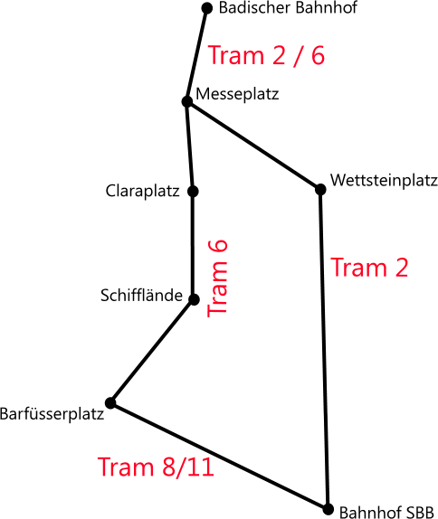

By Plane...
Basel EuroAiport is located about 8km North West of Basel city, and has daily flights to and from Manchester, Birmingham, London, Ireland and many other European and international destinations. Regular flights as many as 4 per day fly to London Heathrow in approximately 1hr 45mins.
EuroAirport to the City
Exit the airport following signs to Switzerland and not Germany/France at all times. Pass through customs and then follow signs to bus 50 and Basel SBB Railway Station.
Bus 50 signed 'Bahnhof SBB' runs from outside the airport to Basel SBB station every 7 - 8 minutes on weekdays, 10 minutes on weekends and 15 minutes on all evenings. First buses are at 5.30am and last buses are at 12.30am. The bus ride to the center is approximately 17 to 20 minutes and the final stop is signalled by an announcement.
Download the Bus 50 to EuroAirport Route map.
{kind=link}
From here either a take train to France or further into Switzerland or catch a tram to Basel Badischer Bahnhof, for all trains to Germany.
Download the Basel SBB to Basel Badischer Bahnhof Route Map.
{kind=link}
The above map shows two routes to get to Badischer Bahnhof for trains to Germany. Take tram 8 towards Kleinhüningen or tram 11 towards St. Louis Grenze to Barfüsserplatz and change to tram 6 towards Riehen Grenze to Badischer Bahnhof. Alternatively, it is possible to take during weekday daytimes, tram 2 towards Eglisee to Badischer Bahnhof directly.
By Train...
Basel SBB allows for travel from Switzerland and France. Subsequently, trains from London can be taken to Paris, a change made at Paris Gare de Lyon to another train to Basel or Zürich. Travel times from London are approximately 10 hours. Basel Badischer Bahnhof allows for train travel from all German destinations.